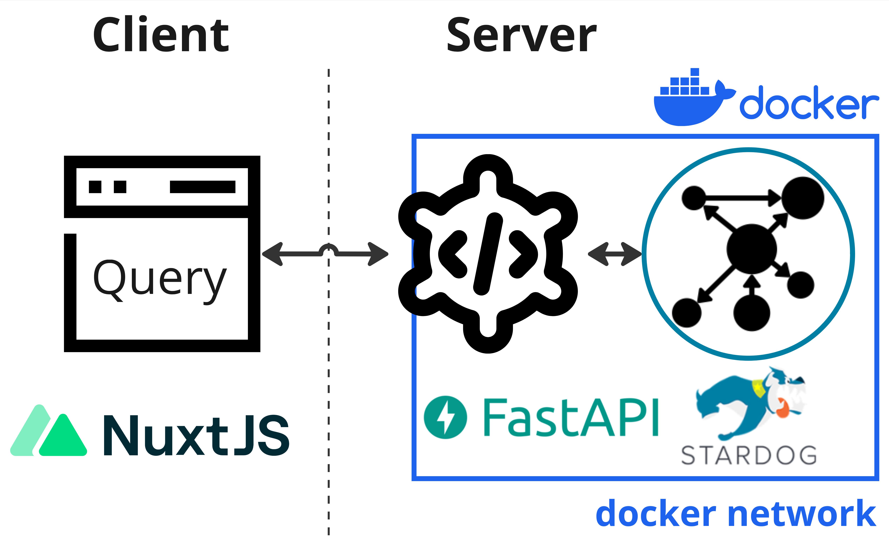

SysAdmin
These instructions are for a sysadmin looking to deploy Neurobagel locally in an institute or lab. A local neurobagel deployment includes the neurobagel API, a graph backend to store the harmonized metadata, and optionally a locally hosted graphical query interface.

Neurobagel uses RDF-triple stores as graph backends. Because RDF is an W3C open standard, any RDF store can be theoretically used as a backend. We have tested the following options:
Stardog is a very performant RDF store with a large number of extensions. However, it has a very restrictive license. We therefore do not recommend Stardog for most deployments or testing.
graphDB offers a perpetual free license that should be sufficient for many smaller deployments or testing deployments.
Note
RDF stores are relatively niche applications for very large data applications, so most implementations are commercial.
Get a license for the graph backend
Stardog has a free, annually renewable license for academic use. In order to make a separate deployment of Neurobagel, you should therefore first request your own Stardog license. You can request a Stardog license here:
https://www.stardog.com/license-request/
Don't pick the wrong license
Stardog is a company that offers their graph store solutions both as a self-hosted, downloadable tool (what we want) and as a cloud hosted subscription model (what we do not want). Both tiers offer free access and the website has a tendency to steer you towards the cloud offering. Make sure you request a license key for Stardog.

The Stardog license is typically automatically granted via email in 24 hours.
The license you receive will be a downloadable file. It is valid for one year and for a major version of Stardog. You will need to download the license in a place that is accessible to your new Stardog instance when it is launched (see below).
graphDB creates a free perpetual license automatically when you don't explicitly provide a license. The free edition mostly offers the same features as the paid versions, but restricts the number of concurrent operations on the graph to 2.
We recommend using graphDB if these restrictions are not a blocker.
Launch the API and graph stack
We recommend launching the API and your graph backend instance using docker compose.
The below steps are distilled from these instructions.
Clone the API repo
git clone https://github.com/neurobagel/api.git
Set the environment variables
Create a .env file in the root of the repository to house the environment variables used by the API-graph network.
The neurobagel/api repo contains a .template-env to get you started. Copy and rename this file to .env and then edit it as needed.
Below are all the possible Neurobagel environment variables that can be set in .env.
| Environment variable | Required in .env? | Description | Default value if not set | Relevant installation mode(s) |
|---|---|---|---|---|
NB_GRAPH_USERNAME |
Yes | Username to access Stardog graph database that API will communicate with | - | Docker, Python |
NB_GRAPH_PASSWORD |
Yes | Password to access Stardog graph database that API will communicate with | - | Docker, Python |
NB_GRAPH_ADDRESS |
No | IP address for the graph database (or container name, if graph is hosted locally) | 206.12.99.17 (graph) ** |
Docker, Python |
NB_GRAPH_DB |
No | Name of graph database endpoint to query (e.g., for a Stardog database, this will take the format of {database_name}/query) |
test_data/query |
Docker, Python |
NB_RETURN_AGG |
No | Whether to return only dataset-level query results (including data locations) and exclude subject-level attributes. One of [true, false] | true |
Docker, Python |
NB_API_TAG |
No | Docker image tag for the API | latest |
Docker |
NB_API_PORT_HOST |
No | Port number on the host machine to map the API container port to | 8000 |
Docker |
NB_API_PORT |
No | Port number on which to run the API | 8000 |
Docker, Python |
NB_API_ALLOWED_ORIGINS |
Yes, if using a frontend query tool ‡ | Origins allowed to make cross-origin resource sharing requests. Multiple origins must be separated with spaces in a single string enclosed in quotes. See ‡ for more info | "" |
Docker, Python |
NB_GRAPH_IMG |
No | Graph server Docker image | stardog/stardog:8.2.2-java11-preview |
Docker |
NB_GRAPH_ROOT_HOST |
No | Path to directory containing a Stardog license file on the host machine | ~/stardog-home |
Docker |
NB_GRAPH_ROOT_CONT |
No | Path to directory for graph databases in the graph server container | /var/opt/stardog * |
Docker |
NB_GRAPH_PORT_HOST |
No | Port number on the host machine to map the graph server container port to | 5820 |
Docker, Python |
NB_GRAPH_PORT |
No | Port number used by the graph server container | 5820 * |
Docker |
NB_QUERY_TAG |
No | Docker image tag for the query tool | latest |
Docker |
NB_QUERY_PORT_HOST |
No | Port number used by the query_tool on the host machine |
3000 |
Docker |
API_QUERY_URL |
Yes, unless default is correct | URL of the API that the query tool will send its requests to. The port number in the URL must correspond to NB_API_PORT_HOST. See also the query tool README. Must end in a forward slash /! |
http://localhost:8000/ |
Docker |
* These defaults are configured for a Stardog backend - you should not have to change them if you are running a Stardog backend.
Your Stardog license file must be in the right directory
Note that your Stardog license file must be in the directory specified by NB_GRAPH_ROOT_HOST (default ~/stardog-home).
* These values will have to be changed for your deployment from their default value:
Change the following default values in your .env file for a graphDB deployment!
NB_GRAPH_IMG=ontotext/graphdb:10.3.1
NB_GRAPH_ROOT_CONT=/opt/graphdb/home
NB_GRAPH_PORT=7200
NB_GRAPH_PORT_HOST=7200
NB_GRAPH_DB=repositories/my_db # NOTE: for graphDB, this value should always take the the format of: repositories/<your_database_name>
** NB_GRAPH_ADDRESS should not be changed from its default value (graph) when using docker compose as this corresponds to the preset container name of the graph database server within the docker compose network.
‡ See section Using a graphical query tool to send API requests
For a local deployment, we recommend to explicitly set at least the following variables in .env
(note that NB_GRAPH_USERNAME and NB_GRAPH_PASSWORD must always be set):
NB_GRAPH_USERNAME
NB_GRAPH_PASSWORD
NB_GRAPH_DB
NB_GRAPH_IMG
NB_RETURN_AGG
NB_API_ALLOWED_ORIGINS
Ensure that shell variables do not clash with .env file
If the shell you run docker compose from already has any
shell variable of the same name set,
the shell variable will take precedence over the configuration
of .env!
In this case, make sure to unset the local variable first.
For more information, see Docker's environment variable precedence.
A note on using a graphical query tool to send API requests
The NB_API_ALLOWED_ORIGINS variable defaults to an empty string ("") when unset, meaning that your deployed API will only be accessible via direct curl requests to the URL where the API is hosted (see this section for an example curl request).
However, in many cases you may want to make the API accessible by a frontend tool such as our browser query tool.
To do so, you must explicitly specify the origin(s) for the frontend using NB_API_ALLOWED_ORIGINS in .env.
For example, the .template-env file in the Neurobagel API repo assumes you want to allow API requests from a query tool hosted at a specific port on localhost (see the Docker Compose section).
Other examples:
# ---- .env file ----
# do not allow requests from any frontend origins
NB_API_ALLOWED_ORIGINS="" # this is the default value that will also be set if the variable is excluded from the .env file
# allow requests from only one origin
NB_API_ALLOWED_ORIGINS="https://query.neurobagel.org"
# allow requests from 3 different origins
NB_API_ALLOWED_ORIGINS="https://query.neurobagel.org https://localhost:3000 http://localhost:3000"
# allow requests from any origin - use with caution
NB_API_ALLOWED_ORIGINS="*"
A note for more technical users: If you have configured an NGINX reverse proxy (or proxy requests to the remote origin) to serve both the API and the query tool from the same origin, you can skip the step of enabling CORS for the API. For an example, see https://docs.nginx.com/nginx/admin-guide/web-server/reverse-proxy/.
Docker Compose
To spin up the API and graph backend containers using Docker Compose, ensure that both docker and docker compose are installed.
Run the following in the repository root (where the docker-compose.yml file is) to launch the containers:
Tip
Double check that any environment variables you have customized in .env are resolved with your expected values using the command docker compose config.
docker compose up -d
docker compose pull && docker compose up -d
By default, this will also deploy a local version of the Neurobagel graphical query tool. If using the default port mappings, you can reach your local query tool at http://localhost:3000 once it is running.
Setup for the first run
When you launch the graph backend for the first time, there are a couple of setup steps that need to be done. These will not have to be repeated for subsequent starts.
To interact with your graph backend, you have two general options:
- Send HTTP request against the HTTP API of the Stardog graph instance (e.g. with
curl). See https://stardog-union.github.io/http-docs/ for a full reference of API endpoints - Use the free Stardog-Studio web app. See the Stardog documentation for instruction to deploy Stardog-Studio as a Docker container.
Info
Stardog-Studio is the most accessible way of manually interacting with a Stardog instance. Here we will focus instead on using the HTTP API for configuration, as this allows programmatic access. All of these steps can also be achieved via Stardog-Studio manually. Please refer to the official docs to learn how.
- Send HTTP requests against the HTTP API of the graphDB backend
e.g. using
curl. graphDB uses the RDF4J API specification. - Use the graphDB web interface (called the workbench). Once your local graphDB backend is running you can connect to it at http://localhost:8000
Info
Using the graphDB workbench is a more accessible way to manage the graphDB endpoint. The workbench is well documented on the graphDB website. Here we will focus instead on setting up graphDB with API calls, that can be automated.
Change the database admin password
When you first launch Stardog,
a default admin user with superuser privilege
will automatically be created for you.
This admin user is meant to create other database users and modify their permissions.
Do not use admin for read and write operations, instead use a regular database user.
You should first change the password of the database admin:
curl -X PUT -i -u "admin:admin" http://localhost:5820/admin/users/admin/pwd \
--data '{"password": "NewAdminPassword"}'
When the API, graph, and query tool have been started and are running for the first time, you will have to do some first-run configuration.
Setup security and users
Also refer to the official graphDB documentation.
First, change the password for the admin user that has been automatically created by graphDB:
curl -X PATCH --header 'Content-Type: application/json' http://localhost:7200/rest/security/users/admin -d '
{"password": "NewAdminPassword"}'
"NewAdminPassword" with your own, secure password.
Next, enable graphDB security to only allow authenticated users access:
curl -X POST --header 'Content-Type: application/json' -d true http://localhost:7200/rest/security
and confirm that this was successful:
➜ curl -X POST http://localhost:7200/rest/security
Unauthorized (HTTP status 401)
Create a new database user
The .env file created as part of the docker compose setup instructions
declares the NB_GRAPH_USERNAME and NB_GRAPH_PASSWORD for the database user.
The API will send requests to the graph using these credentials.
When you launch Stardog for the first time,
we have to create a new database user:
curl -X POST -i -u "admin:NewAdminPassword" http://localhost:5820/admin/users \
-H 'Content-Type: application/json' \
--data '{
"username": "DBUSER",
"password": [
"DBPASSWORD"
]
}'
Confirm that the new user exists:
curl -u "admin:NewAdminPassword" http://localhost:5820/admin/users
curl -X POST --header 'Content-Type: application/json' -u "admin:NewAdminPassword" -d '
{
"username": "DBUSER",
"password": "DBPASSWORD"
}' http://localhost:7200/rest/security/users/DBUSER
Note
Make sure to use the exact NB_GRAPH_USERNAME and NB_GRAPH_PASSWORD you
defined in the .env file when creating the new database user.
Otherwise the API will not have the correct permission
to query the graph.
Create new database
When you first launch graph store, there are no graph databases. You have to create a new one to store your metadata.
If you have defined a custom NB_GRAPH_DB name in the .env file,
make sure to create a database with a matching name.
By default the API will query a graph database
with a name of test_data.
curl -X POST -i -u "admin:NewAdminPassword" http://localhost:5820/admin/databases \
--form 'root="{\"dbname\":\"test_data\"}"'
Now we need to give our new database user read and write permission for this database:
curl -X PUT -i -u "admin:NewAdminPassword" http://localhost:5820/admin/permissions/user/DBUSER \
-H 'Content-Type: application/json' \
--data '{
"action": "ALL",
"resource_type": "DB",
"resource": [
"test_data"
]
}'
Finer permission control is also possible
For simplicity's sake, here we give "ALL" permission to the new database user.
The Stardog API provide more fine grained permission control.
See the official API documentation.
In graphDB, graph databases are called resources.
To create a new one, you will also have to prepare a data-config.ttl file
that contains the settings for the resource you will create (see the graphDB docs).
make sure to that the value for rep:repositoryID
in the data-configl.ttl file matches the value of
NB_GRAPH_DB in your .env file.
For example, if NB_GRAPH_DB=my_db, then
rep:repositoryID "my_db" ;.
You can use this example file and save
it as data-config.ttl locally:
#
# RDF4J configuration template for a GraphDB repository
#
@prefix rdfs: <http://www.w3.org/2000/01/rdf-schema#>.
@prefix rep: <http://www.openrdf.org/config/repository#>.
@prefix sr: <http://www.openrdf.org/config/repository/sail#>.
@prefix sail: <http://www.openrdf.org/config/sail#>.
@prefix graphdb: <http://www.ontotext.com/config/graphdb#>.
[] a rep:Repository ;
rep:repositoryID "my_db" ;
rdfs:label "" ;
rep:repositoryImpl [
rep:repositoryType "graphdb:SailRepository" ;
sr:sailImpl [
sail:sailType "graphdb:Sail" ;
graphdb:read-only "false" ;
# Inference and Validation
graphdb:ruleset "rdfsplus-optimized" ;
graphdb:disable-sameAs "true" ;
graphdb:check-for-inconsistencies "false" ;
# Indexing
graphdb:entity-id-size "32" ;
graphdb:enable-context-index "false" ;
graphdb:enablePredicateList "true" ;
graphdb:enable-fts-index "false" ;
graphdb:fts-indexes ("default" "iri") ;
graphdb:fts-string-literals-index "default" ;
graphdb:fts-iris-index "none" ;
# Queries and Updates
graphdb:query-timeout "0" ;
graphdb:throw-QueryEvaluationException-on-timeout "false" ;
graphdb:query-limit-results "0" ;
# Settable in the file but otherwise hidden in the UI and in the RDF4J console
graphdb:base-URL "http://example.org/owlim#" ;
graphdb:defaultNS "" ;
graphdb:imports "" ;
graphdb:repository-type "file-repository" ;
graphdb:storage-folder "storage" ;
graphdb:entity-index-size "10000000" ;
graphdb:in-memory-literal-properties "true" ;
graphdb:enable-literal-index "true" ;
]
].
Then you can create a new graph db with the following command (replace "my_db" as needed):
curl -X PUT -u "admin:NewAdminPassword" http://localhost:7200/repositories/my_db --data-binary "@data-config.ttl" -H "Content-Type: application/x-turtle"
and add give our user access permission to the new resource:
curl -X PUT --header 'Content-Type: application/json' -d '
{"grantedAuthorities": ["WRITE_REPO_my_db","READ_REPO_my_db"]}' http://localhost:7200/rest/security/users/DBUSER -u "admin:NewAdminPassword"
"WRITE_REPO_my_db": Grants write permission."READ_REPO_my_db": Grants read permission.
Note
make sure you replace my_db with the name of the graph db you
have just created.
Uploading data to the graph
The neurobagel/api repo contains a helper script add_data_to_graph.sh for automatically uploading all JSONLD files (i.e., graph-ready data) in a directory to a specific graph database, with the option to clear the existing data in the database first.
Each .jsonld file is expected to correspond to a single dataset.
To view all the command line arguments for add_data_to_graph.sh:
./add_data_to_graph.sh --help
If you prefer to directly use curl requests to modify the graph database instead of the helper script
Add a single dataset to the graph database (example)
curl -u "<USERNAME>:<PASSWORD>" -i -X POST http://localhost:5820/<DATABASE_NAME> \
-H "Content-Type: application/ld+json" \
--data-binary @<DATASET_NAME>.jsonld
Clear all data in the graph database (example)
curl -u "<USERNAME>:<PASSWORD>" -X POST http://localhost:5820/<DATABASE_NAME>/update \
-H "Content-Type: application/sparql-update" \
--data-binary "DELETE { ?s ?p ?o } WHERE { ?s ?p ?o }"
Uploading example Neurobagel data
In order to test that the graph setup steps worked correctly, we can add some example graph-ready data to the new graph database.
First, clone the neurobagel_examples repository:
git clone https://github.com/neurobagel/neurobagel_examples.git
Next, upload the .jsonld file in the directory neurobagel_examples/data-upload/pheno-bids-output to the database we created above, using add_data_to_graph.sh:
Info
Normally you would create the graph-ready files by first annotating the phenotypic information of a BIDS dataset with the Neurobagel annotator, and then parsing the annotated BIDS dataset with the Neurobagel CLI.
./add_data_to_graph.sh PATH/TO/neurobagel_examples/data-upload/pheno-bids-output \
localhost:5820 test_data DBUSER DBPASSWORD \
--clear-data
./add_data_to_graph.sh PATH/TO/neurobagel_examples/data-upload/pheno-bids-output \
localhost:7200 repositories/my_db/statements DBUSER DBPASSWORD \
--clear-data
Note: Here we added the --clear-data flag to remove any existing data in the database (if the database is empty, the flag has no effect).
You can choose to omit the flag or explicitly specify --no-clear-data (default behaviour) to skip this step.
Updating a dataset in the graph database
If the raw data for a previously harmonized dataset (i.e., already has a corresponding JSONLD which is in the graph) has been updated, a new JSONLD file must first be generated for that dataset. To push the update to the corresponding graph database, our current recommended approach is to simply clear the database and re-upload all existing datasets, including the new JSONLD file for the updated dataset.
To do this, rerun add_data_to_graph.sh on the directory containing the JSONLD files currently in the graph database, including the replaced JSONLD file for the dataset that has been updated.
Make sure to include the --clear-data flag when running the script so that the database is cleared first.
Where to store Neurobagel graph-ready data
To allow easy (re-)uploading of datasets when needed, we recommend having a shared directory in your data filesystem/server for storing Neurobagel graph-ready JSONLD files created for datasets at your institute or lab.
This directory can be called anything you like, but we recommend an explicit name such as neurobagel_jsonld_datasets to distinguish it from the actual raw data files or Neurobagel data dictionaries.
Each .jsonld in the directory should include the name of the dataset in the filename.
Test the new deployment
You can run a test query against the API via a curl request in your terminal:
curl -X 'GET' \
'http://localhost:8000/query/' \
-H 'accept: application/json'
# or
curl -L http://localhost:8000/query/
Or, you can directly use the interactive documentation of the API (provided by Swagger UI)
by navigating to http://localhost:8000/docs in your browser.
To test the API from the docs interface, expand the query endpoint tab with the icon to view the parameters that can be set,
and click "Try it out" and then "Execute" to execute a query.
Note
For very large databases, requests to the API using the interactive docs UI may be very slow or time out.
If this prevents test queries from succeeding, try setting more parameters to enable an example response from the graph, or use a curl request instead.